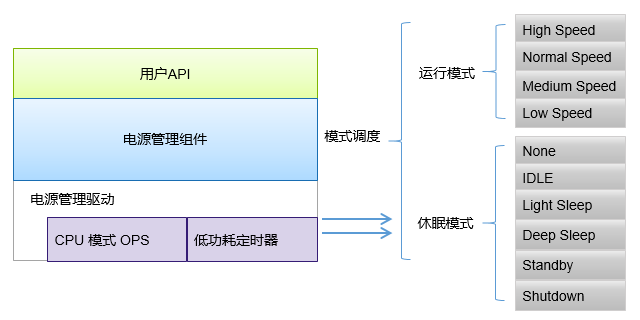
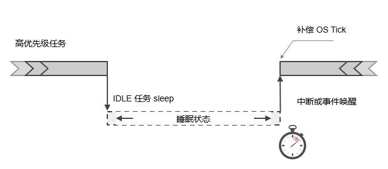
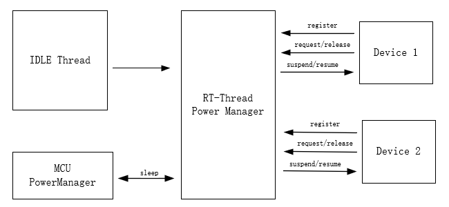
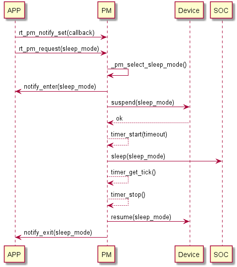
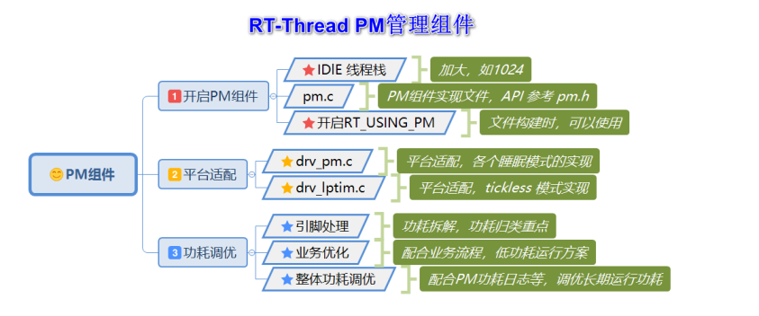
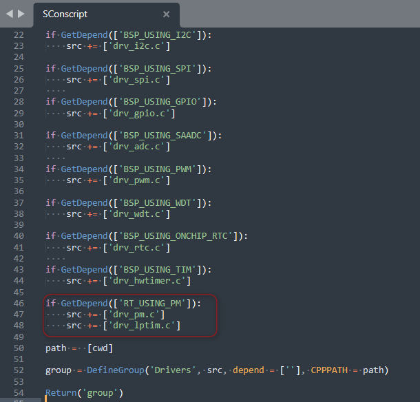
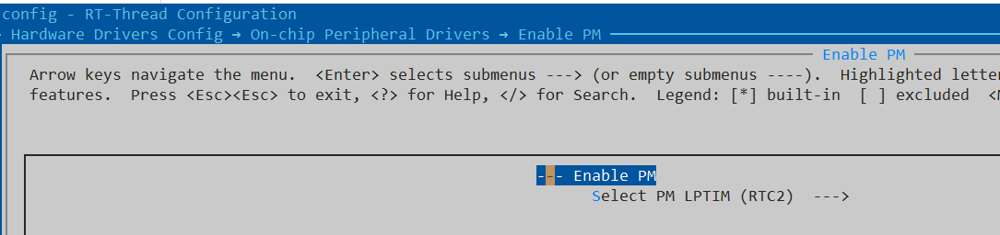
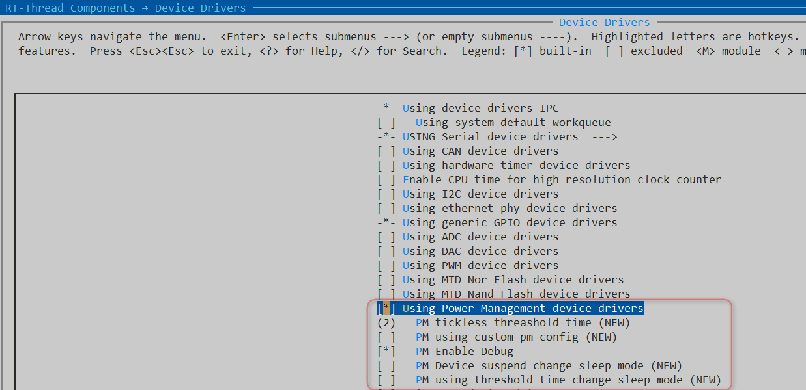
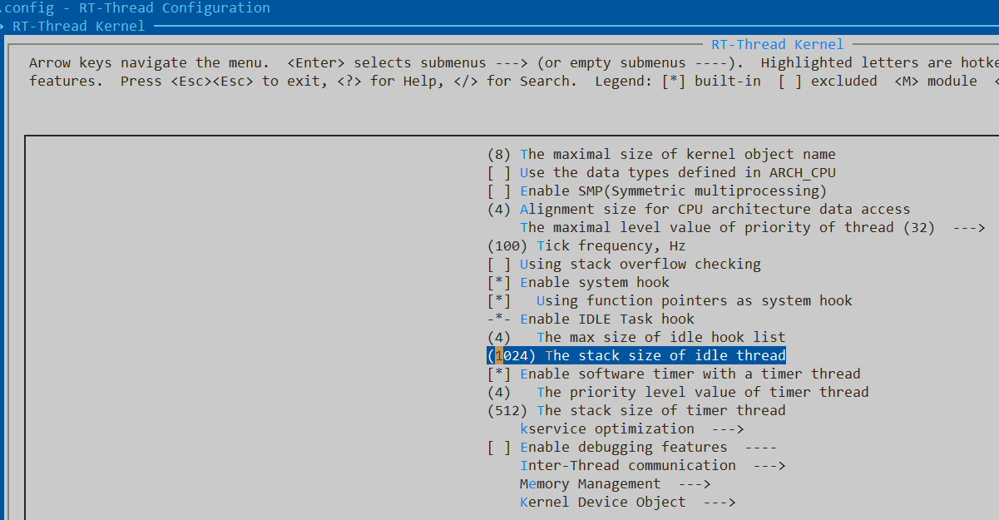

10. 1 前言
本文主要描述了nRF52系列适配RT-Thread PM2.0组件。目前基于nrf52840 DK进行初步功能测试。
11. 2 RT-Thread PM组件简介
本章节内容摘自RT-Thread官方文档《电源管理组件》
RT-Thread 的 PM 组件采用分层设计思想，分离架构和芯片相关的部分，提取公共部分作为核心。在对上层提供通用的接口同时，也让底层驱动对组件的适配变得更加简单。 
11.1. 2.1 工作原理
低功耗的本质是系统空闲时 CPU 停止工作，中断或事件唤醒后继续工作。在 RTOS 中，通常包含一个 IDLE 任务，该任务的优先级最低且一直保持就绪状态，当高优先级任务未就绪时，OS 执行 IDLE 任务。一般地，未进行低功耗处理时，CPU 在 IDLE 任务中循环执行空指令。RT-Thread 的电源管理组件在 IDLE 任务中，通过对 CPU 、时钟和设备等进行管理，从而有效降低系统的功耗。 
11.2. 2.2 设计架构
在 RT-Thread PM 组件中，外设或应用通过投票机制对所需的功耗模式进行投票，当系统空闲时，根据投票数决策出合适的功耗模式，调用抽象接口，控制芯片进入低功耗状态，从而降低系统功耗。当未进行任何投票时，会以默认模式进入(通常为空闲模式)。与应用不同，某些外设可能在进入低功耗状态时执行特定操作，退出低功耗时采取措施恢复，此时可以通过注册PM设备来实现。通过注册 PM 设备，在进入低功耗状态之前，会触发注册设备的 suspend 回调，开发者可在回调里执行自己的操作；类似地，从低功耗状态退出时，也会触发 resume 回调。 
11.3. 2.3 低功耗状态和模式
RT-Thread PM 组件将系统划分为两种状态:运行状态(RUN)和休眠状态(Sleep)。 运行状态控制 CPU 的频率，适用于变频场景；休眠状态根据 SOC 特性实现休眠 CPU，以降低功耗。两种状态分别使用不同的 API 接口，独立控制。
2.3.1 休眠状态
休眠状态也就是通常意义上的低功耗状态，通过关闭外设、执行 SOC 电源管理接口，降低系统功耗。 休眠状态又分为六个模式，呈现为金字塔的形式。随着模式增加，功耗逐级递减的特点。下面是休眠状态下模式的定义，开发者可根据具体的 SOC 实现相应的模式，但需要遵循功耗逐级降低的特点。
| 模式 | 级别 | 描述 |
|---|---|---|
| PM_SLEEP_MODE_NONE | 0 | 系统处于活跃状态，未采取任何的降低功耗状态 |
| PM_SLEEP_MODE_IDLE | 1 | 空闲模式，该模式在系统空闲时停止 CPU 和部分时钟，任意事件或中断均可以唤醒 |
| PM_SLEEP_MODE_LIGHT | 2 | 轻度睡眠模式，CPU 停止，多数时钟和外设停止，唤醒后需要进行时间补偿 |
| PM_SLEEP_MODE_DEEP | 3 | 深度睡眠模式，CPU 停止，仅少数低功耗外设工作，可被特殊中断唤醒 |
| PM_SLEEP_MODE_STANDBY | 4 | 待机模式，CPU 停止，设备上下文丢失(可保存至特殊外设)，唤醒后通常复位 |
| PM_SLEEP_MODE_SHUTDOWN | 5 | 关断模式，比 Standby 模式功耗更低， 上下文通常不可恢复， 唤醒后复位 |
2.3.2 运行状态
运行状态通常用于改变 CPU 的运行频率，独立于休眠模式。当前运行状态划分了四个等级：高速、正常、中速、低速，如下：
| 模式 | 描述 |
|---|---|
| PM_RUN_MODE_HIGH_SPEED | 高速模式，适用于一些超频的场景 |
| PM_RUN_MODE_NORMAL_SPEED | 正常模式，该模式作为默认的运行状态 |
| PM_RUN_MODE_MEDIUM_SPEED | 中速模式，降低 CPU 运行速度，从而降低运行功耗 |
| PM_RUN_MODE_LOW_SPEED | 低速模式，CPU 频率进一步降低 |
11.4. 2.4 调用流程

11.5. 2.5 查看模式状态
可以使用 pm_dump 命令查看 PM 组件的模式状态，使用示例如下所示：
msh >
msh >pm_dump
| Power Management Mode | Counter | Timer |
+-----------------------+---------+-------+
| None Mode | 0 | 0 |
| Idle Mode | 0 | 0 |
| LightSleep Mode | 1 | 0 |
| DeepSleep Mode | 0 | 1 |
| Standby Mode | 0 | 0 |
| Shutdown Mode | 0 | 0 |
+-----------------------+---------+-------+
pm current sleep mode: LightSleep Mode
pm current run mode: Normal Speed
msh >
错误复制成功 在 pm_dump 的模式列表里，休眠模式的优先级是从高到低排列，
Counter 一栏标识请求的计数值，图中表明 LightSleep 模式被请求一次，因此当前工作在轻度休眠状态
Timer 一栏标识是否开启睡眠时间补偿，图中仅深度睡眠(DeepSleep)模式进行时间补偿。
最下面分别标识当前所处的休眠模式及运行模式等级。
11.6. 2.6 MCU平台适配
11.7. 
12. 3 nRF52系列 PM适配
12.1. 3.1 PM功耗等级
| 序号 | RT-Thread PM2.0功耗等级 | STM32L4平台 | nRF52平台 | | — | — | — | — | | 0 | PM_SLEEP_MODE_NONE | Active Mode | Active Mode | | 1 | PM_SLEEP_MODE_IDLE | Run Mode | - | | 2 | PM_SLEEP_MODE_LIGHT | LP SLEEP Mode | SYSTEM ON(Constant Latency) | | 3 | PM_SLEEP_MODE_DEEP | STOP2 Mode | SYSTEM ON(Low-power Mode) | | 4 | PM_SLEEP_MODE_STANDBY | Standby Mode | SYSTEM OFF (RAM retention) | | 5 | PM_SLEEP_MODE_SHUTDOWN | Shutdown Mode | SYSTEM OFF (no RAM retention) |
12.2. 3.2 PM使用的定时器
nRF PM主要使用了2类定时器资源，缺省都是来自RTC2。
OS tick: RTC2 Tick (NRF_DRV_RTC_INT_TICK)。为了更好实现低功耗，采用RTC2 tick来取代systick定时器。
Tickless Timer : RTC2 COMPARE Channel 0 (NRF_DRV_RTC_INT_COMPARE0)
12.3. 3.3 新增适配文件
新增drv_pm.c,drv_lptim.c，文件放在rt-thread\bsp\nrf5x\libraries\drivers
drv_pm.c用于实现nrf低功耗的处理
drv_lptim.c用于实现tickless定时器的处理。 修改rt-thread\bsp\nrf5x\libraries\drivers\SConscript 
12.4. 3.4 修改board\kconfig文件
新增pm选项，可直接通过该选项自动使能PM组件所需依赖文件。
menuconfig BSP_USING_PM
bool "Enable PM"
select RT_USING_PM
default n
if BSP_USING_PM
config NRFX_RTC_ENABLED
int
default 1
choice
prompt "Select PM LPTIM"
default PM_LPTIM_USING_NRFX_RTC2_ENABLED
config PM_LPTIM_USING_NRFX_RTC1_ENABLED
bool "RTC1"
config PM_LPTIM_USING_NRFX_RTC2_ENABLED
bool "RTC2"
endchoice
if PM_LPTIM_USING_NRFX_RTC1_ENABLED && !PM_LPTIM_USING_NRFX_RTC2_ENABLED
config RTC_INSTANCE_ID
int
default 1
config NRFX_RTC1_ENABLED
int
default 1
endif
if !PM_LPTIM_USING_NRFX_RTC1_ENABLED && PM_LPTIM_USING_NRFX_RTC2_ENABLED
config RTC_INSTANCE_ID
int
default 2
config NRFX_RTC2_ENABLED
int
default 1
endif
endif
13. 4 nRF52系列 PM使用
13.1. 4.1 使能nrf5xx软件包(nrfx驱动库)
> pkgs --update
.....
==============================> NRFX latest is downloaded successfully.
==============================> nrfx update done
Operation completed successfully.
13.2. 4.2 使能PM功能
4.2.1 bsp使能PM功能
bsp使能PM功能，当前默认PM使用RTC2定时器

4.2.2 使能PM组件
如果“4.2.1”使能PM功能，则会自动使能PM组件，如果没有，则可自行使能，如下所示： 
4.2.3 修改IDLE任务栈大小
 否则会提示如下错误
error: #35: #error directive: "[pm.c ERR] IDLE Stack Size Too Small!"
#error "[pm.c ERR] IDLE Stack Size Too Small!"
14. 5 测试示例
14.1. 5.1 应用测试代码
#include <rtthread.h>
#include <board.h>
#include <rtdevice.h>
#include "drv_gpio.h"//GET_PIN
#define DBG_ENABLE
#define DBG_SECTION_NAME "button"
#define DBG_LEVEL DBG_LOG
#include <rtdbg.h>
#define LED_1 GET_PIN(0,13) //P0.13
#define PIN_BUTTON1 GET_PIN(0,11)
#define PIN_BUTTON2 GET_PIN(0,12)
#define PIN_BUTTON3 GET_PIN(0,24)
#define PIN_BUTTON4 GET_PIN(0,25)
void button1_irq_callback(void *parameter)
{
rt_pin_write(LED_1, PIN_LOW);
rt_pm_module_request(PM_KEY_ID, PM_SLEEP_MODE_NONE);
LOG_D("[button1_irq: Request - PM_KEY_ID - PM_SLEEP_MODE_NONE]\n");
}
void button2_irq_callback(void *parameter)
{
rt_pin_write(LED_1, PIN_HIGH);
rt_pm_module_release(PM_KEY_ID, PM_SLEEP_MODE_NONE);
LOG_D("[button2_irq: Release - PM_KEY_ID - PM_SLEEP_MODE_NONE]\n");
}
void button3_irq_callback(void *parameter)
{
static uint8_t button3_status = 0x00;
button3_status ^= 0x01;
if(button3_status == 0x00)
{
rt_pin_write(LED_1, PIN_HIGH);
rt_pm_release(PM_SLEEP_MODE_LIGHT);
LOG_D("[button1_irq: Release - PM_SLEEP_MODE_LIGHT]\n");
}
else
{
rt_pin_write(LED_1, PIN_LOW);
rt_pm_request(PM_SLEEP_MODE_LIGHT);
LOG_D("[button1_irq: Request - PM_SLEEP_MODE_LIGHT]\n");
}
}
void button4_irq_callback(void *parameter)
{
rt_pm_request(PM_SLEEP_MODE_SHUTDOWN);
LOG_D("[button1_irq: Request - PM_SLEEP_MODE_SHUTDOWN]\n");
}
int button_gpio_init(void)
{
LOG_D("button_gpio_init.\n");
/* set key pin mode to input */
LOG_D("PIN_BUTTON1=%d,PIN_BUTTON2=%d,PIN_BUTTON3=%d,PIN_BUTTON4=%d\n",
PIN_BUTTON1,PIN_BUTTON2,PIN_BUTTON3,PIN_BUTTON4);
/* set interrupt mode and attach interrupt callback function */
rt_pin_attach_irq(PIN_BUTTON1, PIN_IRQ_MODE_FALLING, button1_irq_callback, (void*) true);
rt_pin_attach_irq(PIN_BUTTON2, PIN_IRQ_MODE_FALLING, button2_irq_callback, (void*) true);
rt_pin_attach_irq(PIN_BUTTON3, PIN_IRQ_MODE_FALLING, button3_irq_callback, (void*) true);
rt_pin_attach_irq(PIN_BUTTON4, PIN_IRQ_MODE_FALLING, button4_irq_callback, (void*) true);
/* enable interrupt */
rt_pin_irq_enable(PIN_BUTTON1, PIN_IRQ_ENABLE);
rt_pin_irq_enable(PIN_BUTTON2, PIN_IRQ_ENABLE);
rt_pin_irq_enable(PIN_BUTTON3, PIN_IRQ_ENABLE);
rt_pin_irq_enable(PIN_BUTTON4, PIN_IRQ_ENABLE);
return RT_EOK;
}
INIT_APP_EXPORT(button_gpio_init);
14.2. 5.1 pm测试命令
msh >
msh >
msh >pm_dump
| Power Management Mode | Counter | Timer |
+-----------------------+---------+-------+
| None Mode | 0 | 0 |
| Idle Mode | 0 | 0 |
| LightSleep Mode | 0 | 0 |
| DeepSleep Mode | 0 | 1 |
| Standby Mode | 0 | 0 |
| Shutdown Mode | 0 | 0 |
+-----------------------+---------+-------+
pm current sleep mode: DeepSleep Mode
pm current run mode: Normal Speed
| module | busy | start time | timeout |
+--------+------+------------+-----------+
| 0001 | 0 | 0x00000000 | 0x00000000 |
+--------+------+------------+-----------+
msh >[D/button] [button1_irq: Request - PM_KEY_ID - PM_SLEEP_MODE_NONE]
msh >pm_dump
| Power Management Mode | Counter | Timer |
+-----------------------+---------+-------+
| None Mode | 1 | 0 |
| Idle Mode | 0 | 0 |
| LightSleep Mode | 0 | 0 |
| DeepSleep Mode | 0 | 1 |
| Standby Mode | 0 | 0 |
| Shutdown Mode | 0 | 0 |
+-----------------------+---------+-------+
pm current sleep mode: None Mode
pm current run mode: Normal Speed
| module | busy | start time | timeout |
+--------+------+------------+-----------+
| 0001 | 0 | 0x00000000 | 0x00000000 |
| 0015 | 0 | 0x00000000 | 0x00000000 |
+--------+------+------------+-----------+
msh >[D/button] [button1_irq: Request - PM_KEY_ID - PM_SLEEP_MODE_NONE]
msh >pm_dump
| Power Management Mode | Counter | Timer |
+-----------------------+---------+-------+
| None Mode | 2 | 0 |
| Idle Mode | 0 | 0 |
| LightSleep Mode | 0 | 0 |
| DeepSleep Mode | 0 | 1 |
| Standby Mode | 0 | 0 |
| Shutdown Mode | 0 | 0 |
+-----------------------+---------+-------+
pm current sleep mode: None Mode
pm current run mode: Normal Speed
| module | busy | start time | timeout |
+--------+------+------------+-----------+
| 0001 | 0 | 0x00000000 | 0x00000000 |
| 0015 | 0 | 0x00000000 | 0x00000000 |
+--------+------+------------+-----------+
msh >[D/button] [button2_irq: Release - PM_KEY_ID - PM_SLEEP_MODE_NONE]
[D/button] [button2_irq: Release - PM_KEY_ID - PM_SLEEP_MODE_NONE]
msh >pm_dump
| Power Management Mode | Counter | Timer |
+-----------------------+---------+-------+
| None Mode | 0 | 0 |
| Idle Mode | 0 | 0 |
| LightSleep Mode | 0 | 0 |
| DeepSleep Mode | 0 | 1 |
| Standby Mode | 0 | 0 |
| Shutdown Mode | 0 | 0 |
+-----------------------+---------+-------+
pm current sleep mode: DeepSleep Mode
pm current run mode: Normal Speed
| module | busy | start time | timeout |
+--------+------+------------+-----------+
| 0001 | 0 | 0x00000000 | 0x00000000 |
+--------+------+------------+-----------+
msh >[D/button] [button1_irq: Request - PM_SLEEP_MODE_LIGHT]
msh >pm_dump
| Power Management Mode | Counter | Timer |
+-----------------------+---------+-------+
| None Mode | 0 | 0 |
| Idle Mode | 0 | 0 |
| LightSleep Mode | 1 | 0 |
| DeepSleep Mode | 0 | 1 |
| Standby Mode | 0 | 0 |
| Shutdown Mode | 0 | 0 |
+-----------------------+---------+-------+
pm current sleep mode: LightSleep Mode
pm current run mode: Normal Speed
| module | busy | start time | timeout |
+--------+------+------------+-----------+
| 0001 | 0 | 0x00000000 | 0x00000000 |
+--------+------+------------+-----------+
msh >[D/button] [button1_irq: Release - PM_SLEEP_MODE_LIGHT]
msh >pm_dump
| Power Management Mode | Counter | Timer |
+-----------------------+---------+-------+
| None Mode | 0 | 0 |
| Idle Mode | 0 | 0 |
| LightSleep Mode | 0 | 0 |
| DeepSleep Mode | 0 | 1 |
| Standby Mode | 0 | 0 |
| Shutdown Mode | 0 | 0 |
+-----------------------+---------+-------+
pm current sleep mode: DeepSleep Mode
pm current run mode: Normal Speed
| module | busy | start time | timeout |
+--------+------+------------+-----------+
| 0001 | 0 | 0x00000000 | 0x00000000 |
+--------+------+------------+-----------+
msh >[D/button] [button1_irq: Request - PM_SLEEP_MODE_SHUTDOWN]